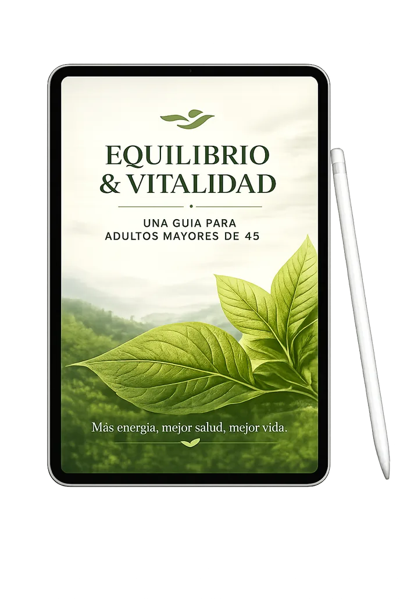

Cómo construir una rutina diaria que apoye el equilibrio natural de tu cuerpo.
EN ESTE EBOOK APRENDERÁS
Qué alimentos ayudan a mantener tu energía estable durante todo el día.
Movimientos simples y adaptados para mantener tu cuerpo activo de forma segura.
Hábitos prácticos para reducir la fatiga y mejorar el bienestar todos los días.
Esta guía fue diseñada para hombres y mujeres mayores de 45 años que desean adoptar hábitos más saludables, tener más energía y sentirse bien cada día, especialmente aquellos que enfrentan desafíos metabólicos.
Quiero Mi Guía de Bienestar!LO QUE APRENDERÁS

Rutinas ligeras para más energía y vitalidad.
Cómo elegir alimentos que apoyen el equilibrio de tu cuerpo.
Técnicas de respiración para reducir el estrés y mejorar el sueño.
Hábitos diarios para mantenerte activo y combatir la fatiga.
Consejos prácticos para un estilo de vida más equilibrado y saludable.